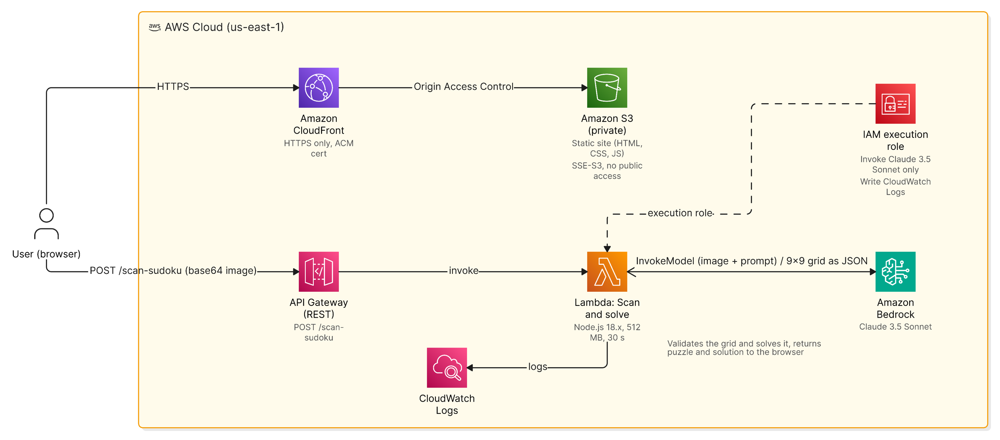

CloudFront + S3 Delivery
The static website (HTML, CSS, JavaScript) was hosted in a private S3 bucket and delivered through CloudFront. CloudFront was the only access point, and the S3 bucket had no public access. S3 versioning was enabled on the bucket, and files were encrypted at rest with SSE-S3 (AES-256).

CloudFront provided two benefits beyond CDN caching:
- HTTPS enforcement. The CloudFront distribution redirected HTTP to HTTPS. Browsers only allow camera access in secure contexts, so HTTPS was required for the camera feature.
- Cost control. S3 charges for data transfer out. CloudFront caches at edge locations, so subsequent requests are served from the cache instead of from S3.
Origin Access Control (OAC)
Origin Access Control (OAC) is the mechanism that ties the CloudFront distribution to the S3 bucket. CloudFront uses OAC to sign requests to S3, and the bucket policy requires that signature.
# S3 bucket policy (simplified)
{
"Principal": {
"Service": "cloudfront.amazonaws.com"
},
"Condition": {
"StringEquals": {
"AWS:SourceArn": "arn:aws:cloudfront::ACCOUNT:distribution/DIST_ID"
}
}
}
The condition scopes access to this specific distribution ARN. Other CloudFront distributions in the account, and the CloudFront service in general, are not granted access. If someone created another CloudFront distribution pointing at this bucket, the bucket policy would reject requests from it.
CORS Configuration
The frontend (served from CloudFront's domain) makes API calls to API Gateway (a different domain). Browsers enforce the same-origin policy and block these cross-origin requests by default. CORS headers on the API Gateway response explicitly allow them.
Access-Control-Allow-Origin: * Access-Control-Allow-Methods: POST, OPTIONS Access-Control-Allow-Headers: Content-Type
Access-Control-Allow-Origin: * means any domain can make
browser-based requests to the API, including sites other than this one. The API endpoint
URL was also visible in the page's JavaScript source, so there was no practical barrier to
another site calling the API. This was a learning gap that I only realised after deploying
the application. In a rebuild I would restrict the origin to the specific CloudFront domain.
API keys would be another way to ensure that only authorised requests reach the Lambda function.
Lambda Configuration
| Setting | Value | Reason |
|---|---|---|
| Runtime | Node.js 18.x | AWS SDK v3 (@aws-sdk/client-bedrock-runtime) |
| Memory | 512 MB | Handles base64 image encoding in memory |
| Timeout | 30 seconds | Accommodates Bedrock model inference latency |
| Architecture | x86_64 | Default. arm64 would be cheaper, but the difference is negligible at this scale. |
The 30-second timeout is driven by Bedrock response latency. Claude 3.5 Sonnet took 4–12 seconds in practice to process a high-resolution image with a detailed extraction prompt. The timeout provided headroom for occasional slower responses without failing the user request.
The 512 MB memory setting holds the base64-encoded image and the Bedrock request in memory. The image is sent as base64 inside a JSON request body, and a synchronous Lambda invocation payload is limited to 6 MB. Base64 adds about a third to the file size, so large phone photos need to be resized in the browser before upload to stay under that limit. CloudWatch logs showed actual memory usage well below 512 MB. With hundreds or thousands of real invocations, I could tune the memory setting (and therefore compute) from the log data. The open-source aws-lambda-power-tuning tool can be used to find the most cost-effective memory setting for a Lambda function.
API Gateway
A single API Gateway resource handles the puzzle scan endpoint:
POST /scan-sudoku. The request body contains a base64-encoded image
and is passed directly to the Lambda function as the event payload.
API Gateway handles SSL termination, request routing, and throttling. As noted in the CORS section, access security on this API was not implemented correctly. The endpoint had no API key, no authoriser and no usage plan, so any caller with the URL could trigger the Lambda function, which calls Bedrock and incurs a charge. IAM correctly scoped what Lambda was permitted to do, but IAM does not control who is allowed to trigger Lambda in the first place. In a rebuild I would use an API Gateway usage plan with a per-key rate limit to cap costs. The default throttle limit (10,000 requests per second) is far too high to act as a useful guardrail.
Network Design
Lambda ran in the AWS-managed environment with no VPC configuration. The only service the function called was Bedrock, which is an AWS service endpoint reached over HTTPS. That does not require VPC deployment.
Calls from Lambda to Bedrock used the regional Bedrock endpoint over TLS. If image storage in S3 were added later, S3 is also an AWS service endpoint reached over HTTPS, so it would not need a VPC either.
The question when evaluating VPC deployment is whether the workload needs to access private network resources. For SUDOKOO, it did not. The function only used AWS managed services reached through their HTTPS endpoints.
Bedrock Integration
Amazon Bedrock provides managed access to foundation models without infrastructure to manage. The Lambda function called the Bedrock API with the image data and a prompt asking for the puzzle as structured data.
// Lambda handler (simplified)
const { BedrockRuntimeClient, InvokeModelCommand } = require('@aws-sdk/client-bedrock-runtime');
const client = new BedrockRuntimeClient({ region: 'us-east-1' });
const response = await client.send(new InvokeModelCommand({
modelId: 'anthropic.claude-3-5-sonnet-20241022-v2:0',
contentType: 'application/json',
accept: 'application/json',
body: JSON.stringify({
anthropic_version: 'bedrock-2023-05-31',
max_tokens: 2000,
messages: [{
role: 'user',
content: [
{
type: 'text',
text: 'Extract the 9x9 Sudoku grid...'
},
{
type: 'image',
source: {
type: 'base64',
media_type: 'image/jpeg',
data: base64Image
}
}
]
}]
})
}));
The prompt asks Claude to return JSON only. As a fallback, the Lambda code strips any Markdown code fence that Claude wraps around the response. After extraction and puzzle validation, the Lambda function runs its own backtracking solver and returns both the puzzle and the solution to the frontend. Claude handles extraction and Lambda handles solving. The browser handles gameplay and checks each move against the stored solution.
Failure Modes
The AI extraction had two main failure modes. I identified them in CloudWatch logs by comparing the response output with the original puzzle photos:
- Grid alignment errors. Correct digit values placed in adjacent cells, typically off by one row or column.
-
Character recognition errors. Misread digits, most commonly
1read as7, or6read as8.
The built-in puzzle validity checker (verifying no duplicate values in any row, column or 3×3 box) catches alignment errors. A misread digit can still produce a grid that passes this check but does not match the original puzzle.
The overall success rate was approximately 50%. For a single-user personal tool, this was acceptable. Re-scanning with better lighting or from a different angle usually resolved failures.
Future Improvements
- Structured JSON output. Use tool use or structured outputs on a current Claude model so the response follows a fixed JSON schema, instead of parsing free text. The original implementation parsed free-text output, which added complexity and fragility. A fixed schema would simplify the Lambda function and improve reliability.
- CI/CD pipeline. A manual S3 upload and CloudFront invalidation for every frontend change was the most time-consuming operational task in this project. A GitHub Actions workflow (push to main → S3 sync → invalidation) would be quick to implement and would save time on every later change.
- Confidence threshold and retry. If Bedrock returns a response that fails validation, automatically retry with a different prompt before returning a failure to the user.
- Resource tagging. All resources should be tagged from day one for cost attribution and resource management.
IAM Design
The Lambda execution role had two permissions:
- AWSLambdaBasicExecutionRole: AWS managed policy, attached directly. Grants CloudWatch Logs write access across all log groups.
-
Custom inline policy:
bedrock:InvokeModelscoped to the specific model ARN:anthropic.claude-3-5-sonnet-20241022-v2:0. The function cannot invoke any other Bedrock model. Switching to a different model requires an explicit IAM update.
Encryption
| Data | In transit | At rest |
|---|---|---|
| Static website files | HTTPS via CloudFront (ACM cert) | SSE-S3 on bucket |
| Puzzle image (upload) | HTTPS via API Gateway | Not stored |
| Lambda ↔ Bedrock | TLS (HTTPS to Bedrock endpoint) | N/A |
Uploaded images were not stored. They were processed in Lambda memory and discarded, and no user data persisted beyond the Lambda invocation. If I continued the project, saving the images would provide a dataset for training a custom model.
WAF Decision
AWS WAF was deployed initially with three managed rules: SQL injection protection, XSS protection (known bad inputs) and the core rule set (CRS). The cost was $8/month. WAF inspects HTTP requests at layer 7 (the application layer). Network-layer DDoS protection comes from AWS Shield Standard, which is included at no extra cost.
For a single-user portfolio project with no real traffic, no user accounts, no stored data and no financial transactions, $8/month was more than the protection was worth. The app had no database, so the SQL injection rule protected nothing. The risk I had actually identified was anyone calling the open API and running up Bedrock charges, which a single WAF rate-based rule or an API Gateway usage plan would have handled better.
For a production application with real traffic, authenticated users, stored personal information or payment processing, I would add WAF back.
Cost Breakdown
| Service | Monthly cost | Notes |
|---|---|---|
| Lambda | ~$0 | Free tier, occasional single-user usage |
| API Gateway | ~$0 | Free tier |
| S3 | ~$0.01 | Small static files, minimal requests |
| CloudFront | ~$0 | Free tier, 1 TB/month data transfer included |
| Bedrock (Claude 3.5 Sonnet) | Variable | ~$0.003–0.015 per scan depending on image size |
| CloudWatch Logs | ~$0 | Minimal volume |
| Total (excluding Bedrock) | ~$0/month | Bedrock is the only meaningful cost |
Bedrock pricing for Claude 3.5 Sonnet is based on input and output tokens. Estimated cost per scan was calculated using typical token usage and AWS published pricing. Actual costs can be observed in Cost Explorer at an aggregate level, but per-request cost requires custom logging of token usage.
Deployment Process
Infrastructure was initially set up through the AWS console. The goal was
to build hands-on understanding of each service's configuration options. The
slowest part was CloudFront cache invalidation. Every frontend change required
a /* invalidation and a wait of 60–90 seconds for it to propagate,
which became tedious. A CI/CD pipeline (push to main → S3 sync → invalidation)
would remove the manual step.